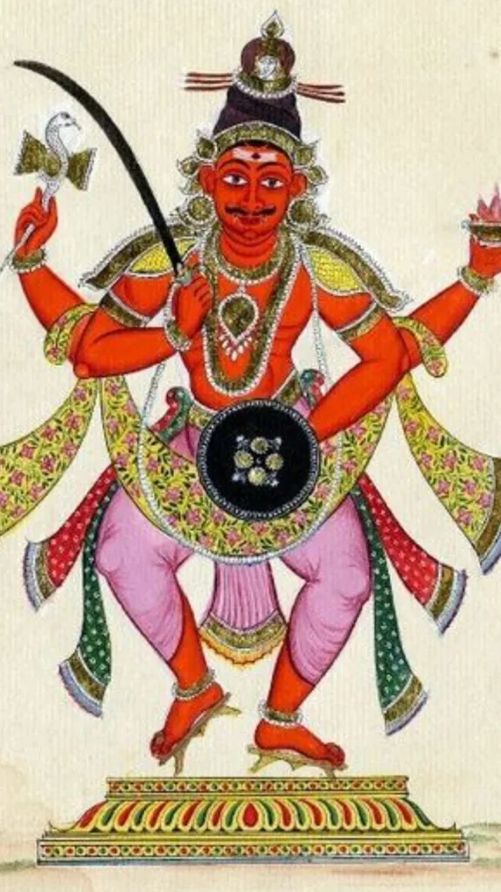

This is a brief history of the Jats with a view to increase awareness about Jat history among the young generation. Please select from the following topics:
The latest genetic studies conducted by the world's top philologists, biologists, geneticists, biochemists and other forensic scientists at the foremost institutions ( including Harvard University ) have shown categorically that Jats either by way of paternal Haploglyph P gene and maternal Mitochondrial gene or by way of both lines of ancestry are identified as possessing predominantly the R1a1 gene identical to Steppe people of Pontic Caspian region identified as the source of migration of Aryan peoples ( i.e. the Kurgan as well as Afanasievo and Andronovo sites ).
Within the Indian subcontinent far exceeding Pathans, Brahmins, Rajputs, Kashmiris, Khatris, Gujjars, Yadavs, Ahirs and all other communities Jats have the highest percentile of genes not only in common with Steppe people but with other European populations including those of Northern Europe. Our genetic affinities with the said Steppe and Eurasian populations cannot be repudiated. Thus philologically Jats are dolichocephalic Eurasian Armenoid caucasoid peoples who are not identified with Sudras associated with labourers mostly drawn from among the oldest indigenous Australoid, aboriginal (and thus pre Elamite Dravidian brachycephalic Alpinoid) subjugated peoples of India. Furthermore, the DNA tests conducted on Brahmins and Rajputs let alone Khatris, Kayasthas or other supposed " Forward castes" found that these communities had in fact more alleles in common with those peoples drawn from the lowest castes of Dravidian and pre-Dravidian origin than with Steppe peoples. In the sites associated with Aryan migration within Central Asia such as the Afanasievo and Andronovo sites and those in Bactria (present day Balkh) in Afghanistan the migration of Steppe people can be traced through burial sites and other evidence such as pottery and ceramics. The burial sites revealed (as demonstrated by the foremost archaeologists) that the dead had been placed in a semi supine position with weapons and sometimes animal bones especially of horses. Identical burial sites were found in Gandhara and Grave Cemetery H in Punjab and in areas of predominantly Jat population. Similarly, identical pottery of the Painted Grey Ware culture unites both regions ( famous British archaeologists Stuart Piggott and Sir Mortimer Wheeler supported these findings well over a century ago ). One of the later major migrations of Steppe peoples and Jat settlement in India as well as Zhat settlement in Iran (1500-600 BC) coincide with the appearance of burial sites, horse remains, chariots, early and crude iron weapons, specific pottery ware. Jat clans abound even today in parts of Eastern Iran descended from these warriors and with identical names to Jat communities in our subcontinent (i.e. Sohi).
Other irrefutable evidence which proves the connection between Steppe peoples and Jats as being Aryan would be linguistic, etymological and semantic evidence. Names that Jats share with Steppe peoples migrating in opposite waves into Europe becoming identified as Getae, Massagetae, Jutes and Saxons ( from Sakas who were one of waves of Pontic Caspian Aryans migrating into India ) cannot be attributed to coincidence ; Maan, Virk, Baines, Gill, Dhillon, Baring, Billing, Bhullar, Hayer, Harman, Burdak, Lohan and many more. In Bavarian Germany there is a town named Gotesberg, in Sweden Gothenburg, in Denmark a whole region called Jutland. In old Norse mythology specific reference is made to Jaets and to their kings Aegir and Ymir. The founders of the Persian Aechmeneid Empire were Zhats migrating from the Steppe region in 600 BC. To this day there are thousands of people living in Eastern Iran who bear the name Sohi identical to that found among Hindu and Sikh Jats in NW India. The Yuezhi in Chinese are associated phonetically and semantically in other languages including the progenitors of our own with Yu-te or Ju-te, yet another Steppe migratory people associated simultaneously with Aryans and Jats. The British Empire which covered a quarter of the Globe and endured for several hundred years was presided over by a royal family of Jat origins ; today the Royal Family of Great Britain have adopted the surname Windsor but prior to 1917 their real surname was Saxe-Coburg-Gotha and their origins from Germany. The Saxons and Goths were, as detailed earlier, descended from the same races as the Aryan-Scythian cluster identified with the Jats of the Indian subcontinent. Branches of the Saxe-Coburg-Gotha dynasty rued most of Europe for several hundred years.
Coming to the Rig Veda constant reference is made to the Jatavedas ( just take one excerpt Hymns xvii to xxi in Book 3 which abound with reference to and invocation of the Jatavedas as a distinct group ). Indra is the God most invoked throughout the Rig Veda and the Mitanni who invaded and conquered large parts of the Near East around 1300 BC challenging both the Hittite Empire and the Egyptian Empire of Rameses II were worshippers of Indra and one of the offshoots of the Rig Vedic tribes. In our ancient scriptures specific and unambiguous reference is made to the Jats. For example, take the Deva Samhita when Parvati asks Siva about the origins of the Jats to which Siva's reply is that they stem from his locks (thus putting them well above the priests or Brahmins) and moreover that of all the races of Kshatriyas the Jats are to him the purest and the most superior. Thus by the standards of Vedic Kshatriyas, there is no dispute as to Jats being true Aryans belonging to the Kshatriya varna.
The Aryan origins of Jats has been further advocated on the basis of the ethnological, physical and linguistic standards for centuries by numerous historians including in most recent times Ernest Binfield Havell, Kalika Ranjan Qanungo, Chintaman Vinayak Vaidya, Sir Herbert Risley, Thakur Deshraj, Mangal Sen Jindal, etc. Jats have more than 5000 gotras and are found in all 4 Kshatriya types i.e, Suryavansh, Chandravansh, Nagavansh and Agnivansh. America's most circulated magazine , Appleton's Journal, published an article about the Jats in 1876 ( Vol XV. No.354, 1 Jan). It referred to the Jats' good looks, rich history and Aryan origins. The article further records how in ancient times over centuries the Jat khaps ruled North-West India repulsing invaders and forcing tribute from their inferior Rajput feudatories. Even in the West well over 100 years ago the Jats in India were regarded as the Aryans with the oldest and purest lineage and as the progenitors of the Races who spread throughout Europe creating the civilisations that eventually sprung up there. For instance, on March 17th 1854, Colonel Sleeman, the then British Resident at Lucknow, wrote to Dr Logan, the guardian of the young Maharaja Dalip Singh, advising that a home should be found in Kent, England, for the young Prince on account of the fact that the inhabitants there were of the same race : "Juts from Jutland in Scandinavia who displaced the original Britons in the 5th century AD". Sleeman goes on to state that these "Juts" like the "Jut ancestors of Dalip Singh were of the same family originating in Kashgar and the Caspian with one branch settling in Western Europe and the other on the Indus and in the Punjab." To quote Sleeman further, " All the old Kentish families are descendants of Juts, and of the same race as Duleep Singh."
However, even assuming that racial origins are not an indication of placement within the caste system and that varnas within the caste system were not determined by racial origins but by profession, status or functionality in society then by way of socio economic factors any hypothesis as to Jats being Sudras is equally flawed. Jats have never been labourers or peasants. They owned and farmed their own lands. Sudras being subsistence-dwelling labourers would have been indentured, employed or forcibly compelled to work on property owned by others as indeed were peasants traditionally ( as per the feudal system in Europe, as with the serfs in Tsarist Russia etc) and forbidden from taking up arms or owning horses. This was never the state of affairs concerning Jats. Similarly, Jats are associated with the duality and symbiosis of warriors with farmers and landowners. As invaders from the Steppe region they conquered with their superior weapons, horses and chariots lands in NW India, Afghanistan, Persia which then needed to be protected by force of arms against other invaders. Land for Jats then as today was an asset providing wealth through agriculture and for stability and security. Holdings varied in size according to wealth and status which is no different to the state of affairs today. But a Jat no matter how humble always owned the land he farmed and in many cases hired labourers or Sudras to work the land for him ( as still occurs today whereby wealthy Jat farmers all over India employ menial labour drawn from multiple communities such as Biharis, tribals, Gujjars, even Rajputs and Brahmins). Today, as in ancient times, Jats prided themselves on their skills in horsemanship which can be witnessed at the annual Rural Olympics in Kila Raipur, Punjab.
The aristocratic and regal status of Jats which further negates any connection with Sudras is corroborated by the fortification of villages in Jat concentrated areas. Besides these Jat fortified villages there were built additional forts which can only be associated with warrior communities. In Pakistan Punjab as many as 12 forts associated with just the Jat Virk clan have been identified. We also know of specific kingdoms ruling most of north west India, present Pakistan, Afghanistan and parts of Persia as far back as 600 BC all bearing identical names to clans still found in such region today : Virk, Kang, Maan, Dahiya. This evidence has been furnished in plenty by such historians as Murad Ali Beg among others. Ancient kings such as Vikramditya and Kanishka have been identified as Virk Jats rom the inscriptions on pillars and stone making reference to them. Dr Vinay Shrivastava of the History Department at Chhatrasal Govt P.G. College, Panna, Madhya Pradesh, has written a paper entitled : Jat Rulers in Malwa : History Related to Origin of Malwa. In this work, he provides compelling evidence to show that Jat tribes from the Punjab entered the Western region of present day Madhya Pradesh state in the 5th Century BC. The area of their settlement was known then as Malava which means the Land of Malhis who were Jat. The names of the other tribes are unquestionably Jat : Kuntal, Bhoj, Bangar, Mall, Chahar, Mann. They ruled within the region for centuries.
Moving forward in time, such renowned historians as C V Vaidya ,Thakur Deshraj and Dr Vinay Srivastava have produced evidence to prove that Yashodharman was born into a Virk Jat family around 500 AD. He repulsed the Huns from India and ruled over the entire Malwa region of today's Western MP state. It mentions in Chandra's Grammar " Ajay Jarto Hunan" meaning that the Jats defeated the Huns. Even the famous Gupta Empire which ruled over a greater area than any other Empire within India preceding or following it with the exception of the Mughals and British was founded by Jats of the Dharan clan and not by Gupta Vaisyas given that in this context the honorific title "Gupta" was not synonymous with the trading community caste. For thousands of years we can observe the consistency in the landowning and martial tradition of Jat royal clans. Bikaner is derived from the Bika Nehras who were Jat rulers there (Jangladesh Jat state was their state which they ruled from 1010 AD to 1488 AD and which was the largest state in 15th Century AD incorporating present day Bikaner, Churu, Hanumangarh, Gangnagar, Jhunjunnu ) ,Delhi from the Dhillon clan ( let alone the fact that Jat king Salakpal Singh Tomar ruled Delhi in 11th Century AD) Fatehpur Sikri which eventually became Mughal Emperor Akbar's capital owes its origin to the Sikarwar Jat clan who ruled there previously. Narsinghpur was established by the Khirwa Jat rulers. Jaisalmer takes its name from the founding Jat clan, Jaisal. Churu in Rajasthan was founded by the Charu Jat clan. Sialkot owes its origins to the Sial Jat clan. Mathura was ruled by the Haga Jats. The strongest, most impregnable, most important strategically and logistically-speaking forts within India are associated with Jat rulers ; Ranthambore Fort was built by the Nagil Dynasty who were Jats and ruled by them for centuries and Gwalior Fort was conquered by the Jat rulers of of Gohad in 1485 AD and ruled from then on by the Gohad and Dholpur Rajas until 1805 AD. Even as far South as present-day Maharashtra there were powerful Jat rulers and dynasties flourishing during the Mughal Era : Sardars Rai Ramki and Majha Singhs Chahar.
One of the most powerful dynasties of the Delhi Sultanate in the Centuries prior to the Mughals was the Tughlaq Dynasty( 1320-1413 AD) which ruled in a short period of time most of the subcontinent and an area exceeding in size that ruled by all the previous Delhi Sultanates or that subsequently acquired by the Mughal Empire over the 300 hundred years of its existence.The founder of the dynasty was Ghazni Malik, born of a Turkish royal father and a Jat mother. He founded Tughlaqabad in Delhi the fort of which remains one of the most impressive and imposing monuments not just within Delhi but in India. In present day Pakistan the regions of Sindh and Balochistan have a long connection and association with the Jats from the time of the Mehrgarh and Kot Diji settlements thousand of years ago right through to Modern Times ; Somra Jats ruled the entire region from 1300 to 1440 A.D. their rule overlapping with that of the Samma Jats whose rule extended to 1519 A.D. while from 1699 A.D. to 1784 A.D. the whole of present day Sindh and Balochistan (encompassing an area of some 500,000 square kilometres) was conquered and ruled by the Kalhora Jats. From 1784 AD to 1843 AD Meer Jats ruled the region.These facts have been corroborated by such scholars and historians as ljaz Ul Haq Qadusi in his work, Tareekh-Sindh as published by Sindhica Academy Karachi. Multan, Punjab, presently in Pakistan was ruled by the Langah Jats from 1445 to 1526 AD. The founder of Rampur state, Nawab Ali Muhammad Khan, was a Hindu Jat converted to Islam upon adoption by his Afghan Rohilla father. Rampur state went on to conquer 33,000 square kilometres challenging the Mughals, Marathas, the Nawab of Oudh and even the British.
Even during Mughal Rule the Jats were recognised as the most formidable adversaries of the Mughals in India. As early as 1581 AD Emperor Akbar issued a royal decree or 'farman to Jat khap ruler Baliyan accepting him as the Wazir of the largest khap in the Doab region of what is today Western UP. From the Mughal period right through to British Rule and beyond as many as 70% of the most powerful zamindars from Punjab to north Madhya Pradesh (excluding parts of Rajasthan) and conferred the hereditary titles of zaildar or numbardar were Jat. In more recent times, all the Sikh Maharajas and Rajas of Punjab save one ( Kapurthala) were Jat : Patiala, Jind, Nabha, Faridkhot, Khalsia, Malaudh, Sogar, Sonkh, Shadzapur. This is true also of all the aristocratic landowning zamindars of the Punjab known as Sardars. All without exception were and are Jat. To this day 80% of all the land in Punjab, the proverbial grain basket of India, is still owned by wealthy and powerful Jats. In UP, Rajasthan and MP there were many Jat Maharajas or Rajas such as those of Ballabgarh, Mursan, Hathras,Angai, Gohad, Dholpur, Bharatpur, Pisawa, Kaithal, Thanesar, Sahanpur, Hodal, Sonkh etc. In fact, all the Princely States of India in modern times were dominated by Jats, Rajputs and Marathas, the very same races regarded as martial by the British.
The martial prowess of Jats which is inconsistent with being Sudras is supported by a vast amount of historical evidence. It is believed that Alexander the Great died in Mesopotamia upon withdrawing his forces from the Punjab region in India. European and Western historians accentuated such belief although the real evidence provides a far more fascinating revelation : according to General Neerkus who fought alongside Alexander the latter was killed in Uchh (in today's Bahawalpur District, Punjab, Pakistan) in 323 BC by a confederation of Malhi, Bajwa and Bahraich Jats to whom he makes specific reference in his writings. Alexander's own historian, Arrian, mentions that Jats were the bravest people Alexander had to contend with upon his invasion of india and this would explain why Alexander undefeated in his campaigns from Greece through Asia Minor, Persia and Mesopotamia came to a standstill at the banks of the Jhelum upon defeating king Porus. Beyond the Jhelum there were numerous Jat chieftains who had also defeated Porus in previous battles and whom Alexander was unable to assail. In 7th Century AD the Jats fought for the Sassanids in Persia against the Islamic invaders just as they did against the armies Muhammad bin Qasim when the Arabs invaded Sindh inflicting heavy losses on Qasim's forces. For instance, Al-Baladhuri writes in Futuh-ul-Buldan that between 659 and 712 A.D. five Arab expeditions were defeated, dispersed and their commanders killed at the borders of Sindh by the Jats and Meds. The Chuchnamah based on a contemporary Muslim account describes in detail how the Jats fought fiercely for every inch of their motherland. They became so renowned for their ferocity and proficiency in fighting that they were recruited into the armies of the Caliphate of Baghdad. One of the greatest conquerors of Central Asia, Mohammed Ghori, was killed by 20 Khokar Jats.
Therefore, of all the races in India it is the Jats who made single-handedly the greatest contribution to liberating the subcontinent from foreign invaders or oppressors. This was not only the case in ancient times but in more recent history right up to Independence. For example, the greatest resistance to the Muslims during the entire period of the Delhi Sultans ( of which there were many drawn from numerous dynasties ) and to the Mughals thereafter came not from Rajputs or others but specifically and overwhelmingly from Jats. There was Rao Manchand of Jatruali who rebelled against Ibrahim Lodhi, Rao Mohan Singh of Bajam who rebelled against Shahjahan, Rao Amar Singh of Khair who rebelled against Aurangzeb as did the 6 feet 6 inch Veer Gokula of Tilpat, the Bhagore cousins Pratap and Durga Singh of Malpura, Veer Fauzdar Thenua of Jawar, Balram Singh of Samuna, Maujiar Singh Chahar of Chaikora, Banarsi Singh Kuntal of Sonkh, Rustam Singh Sogarwar of Fatehpur, Fateh Singh Sinsinwar and of course Rao Churaman Sinsinwar of Sinsini ( founder of Bharatpur dynasty ). These are just a few examples. In the Jat-Mughal Wars of 1688-97 AD massive defeats inflicted on the Mughals led to the carving out of numerous Jat kingdoms from formerly ruled Mughal lands ( Mursan and Hathras, Bharatpur, Ballabgarh, Firozabad, Sogar, Sonkh etc ).
The very last independent and indigenous kingdoms to succumb to British conquests in peninsular India were Jat : Bharatpur in 1828 AD ( following a 20-year siege of the Lohagarh Fort in the course of which one of the British Empire's foremost generals, Lord Lake, perished ), Ranjit Singh's Empire in 1849 AD ( surrendering only in the aftermath of the Second War due to the betrayal by two leading generals within the Sikh camp, Tej and Lal Singh, neither Jat ). Prior to Independence, the community which alongside Rajputs and Marathas accounted for the majority of Princely States, royalty and aristocracy in India were Jat ( be they Muslim, Sikh or Hindu ). Even the Sikh Khalsa owed its origins to Jat Sikhs: in his Zafarnameh to Aurangzeb, Guru Gobind stated that his (the Guru's ) Brar Jats would destroy the Mughal Empire. As far as the Sikh Empire is concerned not only was it founded by a Jat, Maharaja Ranjit Singh, but moreover its antecedents were Jat : of the 12 Sikh Misls 10 were Jat. These Jat Misls conquered the region from the Chenab bordering Attock in the West right through to the Ganga bordering the kingdom of the Oudh Nawab and from Hazara, Peshawar, Kangra, Bilaspur, in the North to Sindh and Rajasthan in the South (conquering even the kingdom of Jaipur under Madho Singh I). These Jats defeated the Rajputs of Jaipur and the Hill States, the Gurkhas (as at Kangra in 1805 AD), Rohillas of Rampur, Afghans, Mughals, forces of the Nawab of Oudh and the Marathas ( repulsing Mahadji Scindia's top generals including Amboji Ingle, Gopal Rao, Madhav Rao Phalke, Francois Madec ).The greatest martyrs in Sikhism were Jat : Bhai Taru Singh, Baba Deep Singh Dhillion, Nawab Kapur Singh Virk, Bhagel Singh Dhalliwal, Phula Singh, Shamsher Atttariwala all of whom ensured single handedly over many generations the survival of Sikhism as well as the safety of all other Indians who otherwise would have succumbed to the Afghans, Persians and Mughals.
Such martial spirit as detailed above as fuelled by honour, courage, tradition and custom ( and thus not the attributes or qualities associated with Sudras ) continued to fire the Jat community even during British Rule whereby the greatest freedom fighters were drawn from such community. For example, the Ghadrites, an armed resistance to British rule were formed by Jats around 1917 AD. India's greatest martyrs vis-a-vis the independence struggle were Jats : Maharaja Dalip Singh, the Raja of Ballabgarh, Amani Singh Thakurela, Shahmal Singh Tomar, Chaudhary Bhaktwar Singh Thakran of Gurgaon (all who died valiantly in the 1857 War against the British ), post-1857AD Raja Mahendra Pratap Singh of Hathras and Mursan ( President of the Provisional Government of India which served as the Indian Government in exile during World War 1 and one of only two individuals from the Indian subcontinent to have been nominated for the Nobel Peace Prize the other being Mahatma Gandhi ), Kartar Singh Sarabha, Udham Singh, Bhagat Singh. It is acknowledged that the vast majority of freedom fighters executed for supposed treason or sedition during the British Rule of India were Jat Sikhs ; out of 121 patriots hanged 93 were Sikh and predominantly Jat Sikh.
Today, the most decorated regiments in the Indian Army from British times right through to the present day are the Jat and (predominantly Jat composed ) Sikh Regiments. 80% of of the 74187 Indian soldiers killed in World War One and the 87000 Indian soldiers killed in Word War Two were Jat. During the First World War Jat soldiers defended Palestine against the Turks with such valour that a number of the villages within the area that now fall within Israel are named after Jat soldiers. The most Victoria Crosses during the British Empire were awarded in India to Gurkhas and Hindu and Jat Sikhs. In fact, the youngest recipient of the VC in India was also a Jat, 19-year old Sepoy Kamal Ram of the 8th Punjab Regiment (awarded on 27 July 1944). Field Marshal Sir Claude Auchinleck, C-IN-C of the British Army during WW2 made this statement of the Jats : "If things looked bleak and danger threatened I would ask nothing better than to have Jats beside me in the face of the enemy." On the eve of the Partition of India and Indian Independence Rab Butler, one of the most highly educated, powerful, eminent and respected politicians in England at the time ( who in his career became at different times Foreign Secretary, Home Secretary, Lord Privy Seal in the British Government ) commented that :"Of all the martial races in the World the Sikhs enjoy the greatest reputation". Of course, it needs not mentioning again that the majority of Sikhs are Jat, the majority of the Sikhs in the armed forces then and before British Rule were Jat and of the medals including the Victoria Cross awarded to Sikhs the majority were to Jats. As illustrated in an Trending stories on Indian Lifestyle, Culture, Relationships, Food, Travel, Entertainment, News and New Technology News - Indiatimes.com
article of 20th September 2017 written by Maninder Dabas, the 3 Jat Battalion sealed the victory for India in the 1965 Indo-Pakistan War. 2/3 of the exclusive President's Bodyguard is Jat. In 2016 or thereabouts all the three heads of India's Armed Forces (army, navy and air force ) were Jat and no other community has achieved this accolade to date. The individuals were : Dalbir Singh Suhag ( Army), Sunil Lamba (Navy) and Birender Singh Dhanoa ( Air Force).In 2019 Sunil Lamba was replaced as Chief of the Indian Navy by yet another Jat, Admiral Karambir Singh Nijjar. Dalbir Singh Suhag's immediate predecessor as Chief of the Army was also a Jat, General Bikram Singh. UNESCO has cited the Battle at Saragarhi ( 21 Jat Sikhs of the exclusively Jat Sikh 36th Sikh Regiment against 10000 Afghans ) as the bravest battle ever fought in world history. Arjan Singh Aulakh is the only individual although from the Air Force to hold the equivalent rank of Field Marshal post Indian Independence with the only two Field Marshals of the Army to date being Sam Manekshaw and K.M.Cariappa. Jat Maharaja Ranjit Singh was voted in a worldwide BBC poll in 2020 as the greatest ruler in world history.
All the above facts point indisputably to Jats as having been for millennia a distinct and distinguished martial, regal and landowning race of European and Central Asian origin. These are not the characteristics of the indigenous conquered or subjugated, downtrodden, servile, submissive, oppressed and passive sections of society associated by all objective criteria with Sudras. It is interesting that the complete Mandal Commission data on OBCs ( Other Backward Classes ) was taken from the 1931 Census : in this 1931 Census Rajputs were categorised as OBCs in 5 states, Rajpurohit Brahmins as OBCs in Rajasthan. Nowhere were Jats classified as OBCs. Yet Khatris were classified as OBCs in a number of states specifically Rajasthan, Gujarat and Tamil Nadu. In fact, writers and academics such as Santokh S. Anant have stated that in the majority of villages in Northern India the Jat occupied a superior status by way of caste to Brahmins even.
Jats and Steppe migrating White Armenoid Caucasians ( whom we identify as Aryans speaking a Proto Indo European language associated with Avestan and Vedic ) were not only sympatric but to a large extent synonymous ( by way of culture, burial rites, names, affinity for arms, horses, pastoral turned to agricultural way of life ). Assuming Sudra was a caste among the varna system created in the Manusmriti then incorporation into this or any of the other three castes could only be through compulsion, deference to Brahminism or through voluntary submission. However, Jats were a distinct ethnic and homogeneous race who migrated in different streams into the Indian subcontinent ( to as recently as 1st Century BC with the Kushans ) and thus always remained outside the mainstream of the predominantly sedentary Dravidian and pre-Dravidian societies and communities already incorporated and integrated within a structure presided over by a priestly oligarchy which we have come to associate with Brahmins. Jats regarded themselves as superior to all other races and communities in the Subcontinent and chose thus to stay outside the caste system which was alien to them. On account of this obstinacy Brahmins may have attributed Sudra status to Jats but such status would have been obsolete and void because unless the Jats were incorporated into the caste system be that voluntarily or through coercion ( for which neither situation prevailed in their case ) designation as Sudra could obviously not be sanctioned or made legitimate. On this basis, the Greeks, Huns, Arabs, Turks, Persians, Mongols and British all of whom invaded, conquered and ruled large parts of India ( as their Jat predecessors did ) could equally have been regarded as Sudras if this were to be a penalty of not accepting incorporation into the fanatically orthodox Brahminical system.
Thus the label of Sudra for Jats was nothing more than derogatory, abusive name calling by a frustrated indigenous clerical elite. Similarly, when Emperor Asoka adopted Buddhism on account of the sect of Buddhism to which he belonged ( Hinayana I believe ) which placed Kshatriyas as the highest caste ( no doubt on account of Buddha's Kshatriya origins ) the Mauryans were attributed Sudra status in revenge by the Brahmins. Finally, being a Kshatriya required no sanctioning or official rubber stamping from Brahmins. Whatever status Brahmins may have wished to attribute to Jats over the centuries Jats became identified and acknowledged as Kshatriyas no matter that they remained outside the caste system simply through their actions and deeds ( fighting, conquering, ruling and landowning ) the facets of which by all objective standards superseded and prevailed over any fanatically orthodox, obtuse and by then obsolete propagandist theologising. Jats as a martial race spanning Western Eurasia and Europe over millennia needed no acknowledgement of their status by upstart Brahmins in India who often bestowed such status on communities with no martial background but through self-interest, political connivance and expediency. For example, how many ruling dynasties adopted Rajput status and invented genealogies for themselves mostly steeped in mythology ( descended from the Solar or Lunar deities ) all with the contrivance and machinations of the Brahmins who stood to benefit politically and economically from such lucrative alliances.
It has now been proved scientifically and beyond all reasonable doubt through forensic science and DNA testing ( as they say 'blood doesn't lie'), through archaeology, anthropology, linguistics and semantics as well as literary sources ( historical, religious and other ) that of all races within the Indian subcontinent Jats are racially and ethnically the closest to the Steppe migratory peoples associated with the Aryan culture and that they have always been associated with Kshatriyas from ancient times right to the present and the traditions thereof : tribal self-protective clanships, the bearing of arms and pride in horsemanship, landownership, the construction of fortified towns and villages, conquering and ruling territories through warfare, the establishment of kingdoms with hereditary titles and succession based on primogeniture.
जाट मूल रूप से उत्तर भारत और पाकिस्तान में पाया जाने वाला पारंपरिक रूप से कृषकों का एक जाति समुदाय है. इनका इतिहास स्वर्णिम और प्राचीन है. यह एक आदिकालीन प्राचीनतम क्षत्रिय वर्ग है. यह शारीरिक रूप से मजबूत और आकर्षक तथा स्वभाव से उत्साही, मेहनती, बेवाक, अकखड़, स्पष्टवादी, साहसी और दबंग होते हैं. जाट एक प्रमुख कृषक समुदाय है जो अपनी जमीन के मालिक होते हैं. इन्हें 16वीं शताब्दी में बादशाह अकबर के शासनकाल से ही जमींदारों के रूप में जाना जाता है.निष्कपटता, सत्य निष्ठा और ईमानदारी जाटों के सहज गुण हैं. जाटों के चरित्र के बारे में कहा जाता है कि जाट मरते समय अपने उत्तराधिकारी को यह बता कर मरता है कि किस किसका कितना कर्ज चुकाना है.आइए जानते हैं जाटों का इतिहास, जाट शब्द की उत्पत्ति कैसे हुई?
यहां इस बात का उल्लेख करना जरूरी है कि राजस्थान के 2 जिलों भरतपुर और धौलपुर में जाटों को ओबीसी सूची से बाहर रखा गया है, क्योंकि यहां पहले जाट राजाओं का शासन था. इन दो जिलों को छोड़कर जाट राजस्थान में ओबीसी आरक्षण के तहत केंद्र सरकार की नौकरियों में आरक्षण के हकदार हैं.
भारत में जातिगत जनगणना की व्यवस्था नहीं होने के कारण किसी जाति के सटीक जनसंख्या के बारे में बताना कठिन है. प्रतिष्ठित अखबार हिंदुस्तान टाइम्स के मुताबिक वर्ष 2012 में भारत में जाटों की जनसंख्या 8.25 करोड़ थी. इससे हम अनुमान लगा सकते हैं कि वर्तमान में जाटों की जनसंख्या 10 करोड़ के आसपास हो सकती है.
विभिन्न राज्यों में जाटों की जनसंख्या इस प्रकार है- पंजाब में जाट 30 से 35% हैं, जबकि हरियाणा में इनकी आबादी 27% के आसपास है. राजस्थान में इनकी जनसंख्या करीब 12%, उत्तर प्रदेश में 6 से 8% और दिल्ली में लगभग 8% है.
जाट मुख्य रूप से भारत और पाकिस्तान में पाए जाते हैं.
भारत में जाट मुख्य रूप से उत्तरी भारत में पाए जाते हैं. हरियाणा, पंजाब, दिल्ली और राजस्थान में जाटों की सघन आबादी है. इन राज्यों के अलावे जाट उत्तर प्रदेश विशेष रूप से पश्चिमी उत्तर प्रदेश, मध्य प्रदेश, गुजरात, हिमाचल प्रदेश, उत्तराखंड और जम्मू-कश्मीर में भी निवास करते हैं. पंजाब में इन्हें जट्ट या जट कहा जाता है. शेष राज्यों में इन्हें जाट कहा जाता है. गुजरात में इसे आँजणा जाट या आंजना चौधरी के नाम से जाना जाता है.
पाकिस्तान में जाट विशेष रूप से सिंध, पंजाब और बलूचिस्तान प्रांत में पाए जाते हैं. गुजरांवाला, मुल्तान, बहावलपुर, डेरा इस्माइल खान, पाक अधिकृत कश्मीर आदि में इनकी सघन आबादी है.
जाट मूल रूप से हिंदुओं की जाति या समुदाय है. जाटों की धार्मिक पहचान कैसे विकसित हुई इसके बारे में इतिहासकार कैथरीन असर (Catherine Asher) और सिंथिया टैलबोट (Cynthia Talbot) ने विस्तार से बताया है. उन्होंने कहा है कि पंजाब और अन्य उत्तरी क्षेत्रों में बसने से पहले जाटों का मुख्य धारा के अन्य धर्मों से बहुत कम संपर्क था. अन्य धर्मों के संपर्क में आने के बाद उन्होंने उस क्षेत्र के प्रमुख धर्म को अपनाना शुरू कर दिया है जिनके बीच वह रहते थे. समय के साथ जाट मुख्य रूप से पश्चिमी पंजाब में मुस्लिम, पूर्वी पंजाब में सिख और दिल्ली और आगरा के बीच रहने वाले जाट हिंदू बन गए. शोधकर्ता डेरिक ओ. लॉड्रिक ने जाटों के धर्म के आधार पर विभाजन का अनुमान इस प्रकार लगाया: 47% हिंदू, 33% मुस्लिम और 20% सिख.
जाट शब्द की उत्पत्ति के बारे में निम्नलिखित बातें कहीं जाती है- 1.जाट शब्द की उत्पत्ति संस्कृत के शब्द ‘ज्ञात’ से हुई है. ज्ञात से सब “जात” बना और फिर कालांतर में यह शब्द अपभ्रंश होकर “जाट” बन गया.
2. जाट शब्द “जट्टा” से बना है. जट्टा पशु चराने वाले और ऊंट प्रजनकों को के लिए एक सामान्य शब्द है जो समूह या जत्था में घूमते हैं.
3. तीसरी, पौराणिक मान्यता है कि जाट समाज की उत्पत्ति भगवान शिव के जटाओं से हुई है. इसीलिए जाट शब्द की उत्पत्ति जटा से हुई है.
जाट जाति की उत्पत्ति के बारे में कई मान्यताएं हैं तथा इस विषय पर विद्वानों और इतिहासकारों की अलग-अलग राय है. आइए इसके बारे में विस्तार से जानते हैं-
पौराणिक मान्यता के अनुसार जाट जाति की उत्पत्ति भगवान शिव की जटाओं से हुई है. इसका उल्लेख देव संहिता नाम के पुस्तक में मिलता है. इस मान्यता के अनुसार, भगवान शिव के ससुर राजा दक्ष ने हरिद्वार के नजदीक “कनखल” में एक बड़े

यज्ञ का आयोजन किया. उन्होंने इसके लिए भगवान शिव छोड़कर सभी देवी देवताओं को निमंत्रण दिया. जब भगवान शिव की पत्नी माता सती को यज्ञ बारे में खबर मिली तो माता ने बिना निमंत्रण के ही पिता के यज्ञ में जाने के लिए महादेव से आज्ञा मांगी. ना चाहते हुए भी भगवान शिव ने यह कहकर माता को आगे दे दी कि -‘तुम उनकी पुत्री हो और तुम अपने पिता के घर बिना निमंत्रण के भी जा सकती हो’. माता सती जब पिता के घर पहुंची तो राजा दक्ष ने उनके साथ सही व्यवहार नहीं किया. महादेव के लिए कोई स्थान निर्धारित नहीं था, ना ही उनके लिए भाग ही निकाला गया था. राजा दक्ष द्वारा भगवान शिव का अपमान किया गया और उनके बारे में भला-बुरा कहा गया. पिता के अपमान से आहत होकर माता सती ने हवन कुंड में कूद कर अपने प्राण त्याग दिए. जब महादेव ने यह सुना तो क्रोधित होकर उन्होंने अपनी जटा को खोल कर जमीन पर पटका, जिससे वीरभद्र नाम का महाशक्तिशाली और पराक्रमी गण उत्पन्न हुआ. उन्होंने वीरभद्र को राजा दक्ष के यज्ञ को तहस-नहस करने भेजा. वीरभद्र ने जाकर यज्ञ को नष्ट कर दिया और आमंत्रित राजाओं का मानमर्दन किया. वीरभद्र ने राजा दक्ष के सिर काट दिया. फिर भगवान विष्णु, ब्रह्मा और सभी देवी देवता भगवान शिव को मनाने पहुंचे और उनसे राजा दक्ष को क्षमा करने की याचना की. भगवान शिव ने शांत होकर दक्ष को पुनर्जीवित कर दिया. इस मान्यता के अनुसार, वीरभद्र से ही जाट समाज की उत्पत्ति हुई है.
कुछ इतिहासकारों और विद्वानों का मानना है कि जाट जाति की उत्पत्ति “ज्येष्ठ” शब्द से हुई है. इस मान्यता के अनुसार, राजसूय यज्ञ के बाद भगवान श्री कृष्ण ने युधिष्ठिर को “ज्येष्ठ” घोषित किया था. कालांतर में युधिष्ठिर के ही वंशज ‘ज्येष्ठ’ से ‘जेठर’ तथा ‘जेटर’ और फिर ‘जाट’ के नाम से जाने जाने लगे.
इतिहासकार विसेंट स्मिथ, कनिंघम और जेम्स टॉड के अनुसार, जाट इंडो-सीथियन मूल के हैं, जो बाहर से भारत में आए. उन्होंने 200 ईसा पूर्व और 600 ईसवी के बीच भारत पर आक्रमण किया और अंत में यही बस गए.
यूनानी इतिहासकार प्लिनी और टॉलेमी का मत है कि जाट मूल रूप से ऑक्सस नदी के तट पर रहते थे, जो ईसा से लगभग एक सदी पहले भारत में आकर बस गए.
कुछ इतिहासकारों का मत है कि जाट मूल रूप से इंडो-आर्यन मूल के हैं. यह भारत के सबसे प्राचीन लोगों में से एक हैं.
बीसवीं शताब्दी तक, जमींदार जाट पंजाब, हरियाणा, दिल्ली, पश्चिमी उत्तर प्रदेश, राजस्थान और दिल्ली समेत उत्तर भारत के कई हिस्सों में एक प्रभावशाली वर्ग के रूप में उभरे. इन वर्षों में जाटों ने पारंपरिक कृषि कार्य और पशुपालन के साथ-साथ अन्य पेशा अपनाना शुरू कर दिया जैसे परिवहन व्यवसाय, व्यापार, सरकारी और निजी क्षेत्र में सेवाएं जैसे शिक्षक, डॉक्टर, इंजीनियर आदि.
प्राचीन काल से ही युद्ध कला में निपुण रहे जाटों को एक उत्कृष्ट योद्धा माना जाता है. पारंपरिक रूप से कृषि और पशुपालक जाति होने के बावजूद जाट आवश्यकता पड़ने पर हथियार उठाने से संकोच नहीं करते. 17 वी शताब्दी के अंत और 18 वीं सदी के शुरुआत में इन्होंने मुगल साम्राज्य के खिलाफ हथियार उठा लिया था. बता दें कि 17 वीं शताब्दी में औरंगजेब के जीवन काल का अधिकांश वक्त उत्तर भारत में जाट शक्तियों को नियंत्रित करने और दक्षिण भारत में मराठा शक्ति का दमन करने में लगा. आज भी भारतीय सेना, अर्धसैनिक और पुलिस बलों में जाटों की मजबूत उपस्थिति है. भारतीय सेना में इनके नाम पर रेजिमेंट भी है जिसे जाट रेजिमेंट के नाम से जाना जाता है.